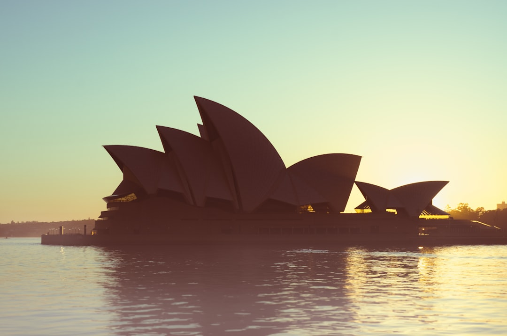

Best Website Creation is presented on its source page as offering free, conversion-focused web design for Australian businesses. A sensible brief should therefore test two things at once: whether the design work supports enquiries or sales, and whether the finished site can be maintained, searched, understood and trusted. Use this guide to compare scope, content responsibilities, technical standards, handover expectations and evidence before choosing a provider.
For Australian business owners comparing web design australia options, the useful question is not only how a site looks, but how clearly it turns visitors into enquiries, bookings or sales.
Web Design Australia Explained
Best Website Creation is described in the supplied source text as offering free, conversion-focused web design for Australian businesses. That is a narrow factual base, so the safest way to assess the offer is to ask what is included, what is excluded, and how the conversion focus will be shown in the finished work.
For a small business, conversion-focused design usually means the page structure, calls to action, service explanations, trust signals and contact paths are planned around a visitor's next step. It does not automatically prove any result, ranking or revenue outcome. The practical value comes from whether the brief names the desired action, the target customer, the key pages and the evidence a visitor needs before making contact.
Keep the discussion anchored in observable deliverables. Ask for the proposed page list, content inputs, launch process, ownership arrangements, analytics setup and post-launch editing path. A free design offer can still involve important commercial decisions, including hosting, copywriting, add-ons, future maintenance and who controls accounts after the site is published.
Who This Applies To
This guide is most relevant to Australian businesses that need a clearer website brief before speaking with a designer. It suits service businesses, local operators, consultants and newer ventures that want a public site to explain an offer, collect enquiries and support search visibility without turning the buying process into a purely visual decision.
- New businesses: confirm the first version can explain the offer, show contact options and leave room for service pages later.
- Existing businesses: compare the current site against real customer questions, not only against a newer visual style.
- Local service providers: decide which locations, services and proof points genuinely belong on the site before design begins.
- Owners comparing regions: a companion Brisbane web design comparison can help frame local briefing questions without turning location into filler.
The common thread is control. A business should know what it is approving, what content it must supply, and how the completed site will be used after launch.
Conversion Focus Without Overclaiming
Conversion language should be handled carefully. A page can be designed to make action easier, but a provider should not need to promise a fixed volume of leads to explain the work. Stronger signs include clear offer hierarchy, simple navigation, fast access to contact options, relevant proof, readable service copy and forms that ask only for information the business actually needs.
Before agreeing to a project, ask how the designer will decide the primary call to action on each page. A quote request, phone enquiry, booking form and email lead are different behaviours. Each one changes the layout, the wording near the button, the fields required and the way success is measured.
Content is just as important as layout. If the business cannot explain its service areas, inclusions, exclusions and decision criteria, the design has little to organise. A useful design conversation should reveal gaps in the offer, not hide them behind images and broad claims.
Standards, Trust And Search Basics
The World Wide Web Consortium is a recognised standards body for the web. Its role is a useful reminder that a business website is not just a visual asset. It is a document, interface and technical system that should work across devices, browsers and user needs.
Search visibility also starts with fundamentals. Search engine optimisation, keyword research, local search signals, internal page structure and readable service copy all influence whether a site can be understood by people and search engines. None of those elements guarantees placement on a search engine results page, but weak foundations make later digital marketing harder.
Trust should be treated as a design requirement. The Australian Competition and Consumer Commission is a relevant reference point for Australian businesses because public claims, pricing statements and service descriptions should not mislead customers. A website brief should therefore include a check of claims, qualifications, testimonials, guarantees and any wording that could create the wrong expectation.
Questions To Ask Before You Proceed
The strongest brief turns a design conversation into a list of decisions. Ask which pages are included, who writes the copy, whether search basics are considered, how revisions work, what happens after launch and who owns the domain, hosting and editable site access. These questions matter even when the design component is described as free.
Also ask what evidence will be used to judge success. For some businesses, the answer is enquiry quality. For others, it is clearer explanations, easier quoting, fewer repetitive phone questions or a stronger base for future advertising. Those are practical outcomes, but they still need measurement and review after the site goes live.
A final check is portability. The business should understand whether it can update pages, add content, review web traffic and keep improving service explanations. A site that cannot be changed easily may become stale, even if the first version looks polished.
- Define the outcome. Write down the main action visitors should take, such as making an enquiry, requesting a quote or booking a consultation.
- List the essential pages. Decide which services, locations, proof points and contact paths must be present at launch.
- Check claim wording. Review all promotional, pricing and guarantee language against what the business can honestly support.
- Confirm ownership. Ask who controls the domain, hosting, analytics, content management access and future editing rights.
- Plan review. After launch, compare visitor behaviour and enquiry quality against the goal set in the brief.
| Decision | Ask For | Why It Matters |
|---|---|---|
| Free design scope | A written list of included and excluded work | Prevents confusion about copy, hosting, changes and future costs |
| Conversion focus | The main action for each key page | Connects layout choices to enquiries, bookings or sales |
| Search foundations | Page structure, headings and content responsibilities | Helps the site support future SEO work |
| Handover | Access, editing process and ownership details | Keeps the business in control after launch |
Common questions
What does the source say about the provider? The supplied source text presents Best Website Creation as offering free, conversion-focused web design for Australian businesses. It does not provide extra details about inclusions, timeframes, reviews, addresses or performance results.
Does conversion-focused design guarantee more leads? No guarantee is established in the supplied facts. Treat conversion focus as a design aim that should be supported by clear calls to action, relevant content and a review process.
What should Australian businesses check before accepting a free design offer? Ask what the free component includes, what paid items may sit around it, who owns the site assets, and how public claims will be checked for accuracy.
Why do standards and SEO belong in a design brief? A business website needs to be usable, understandable and maintainable. Search engine optimisation, local search and web standards are relevant because they affect how people and systems interpret the site.
This guide covers practical evaluation of an Australian web design brief, including conversion aims, search foundations, standards, claims and handover questions.